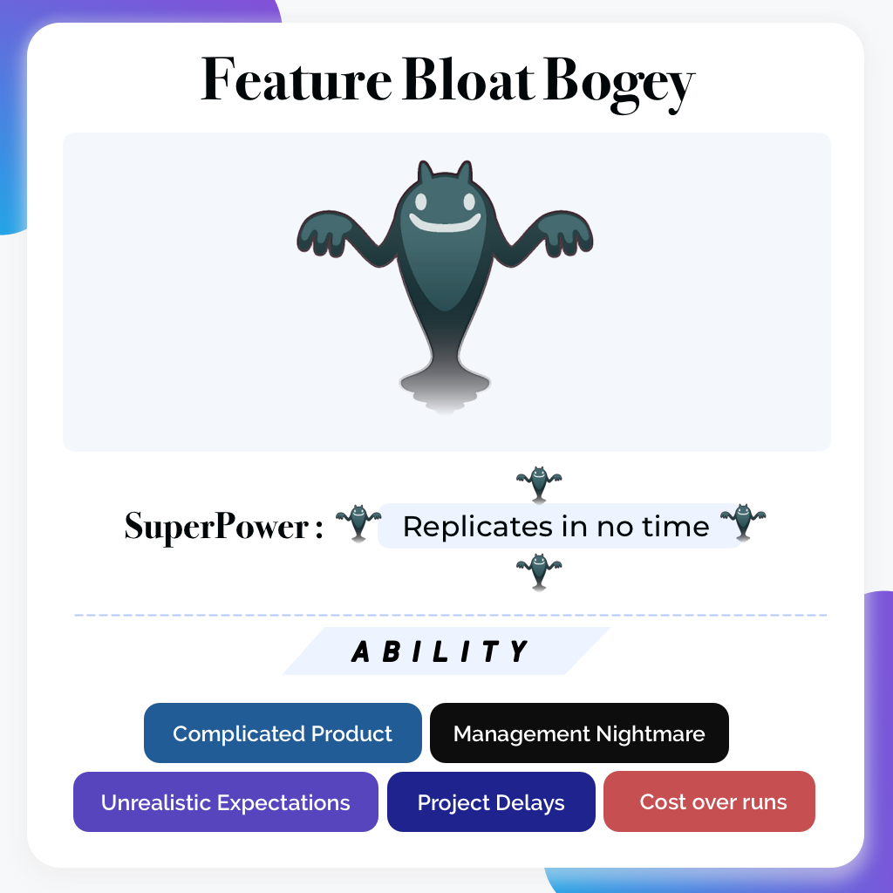
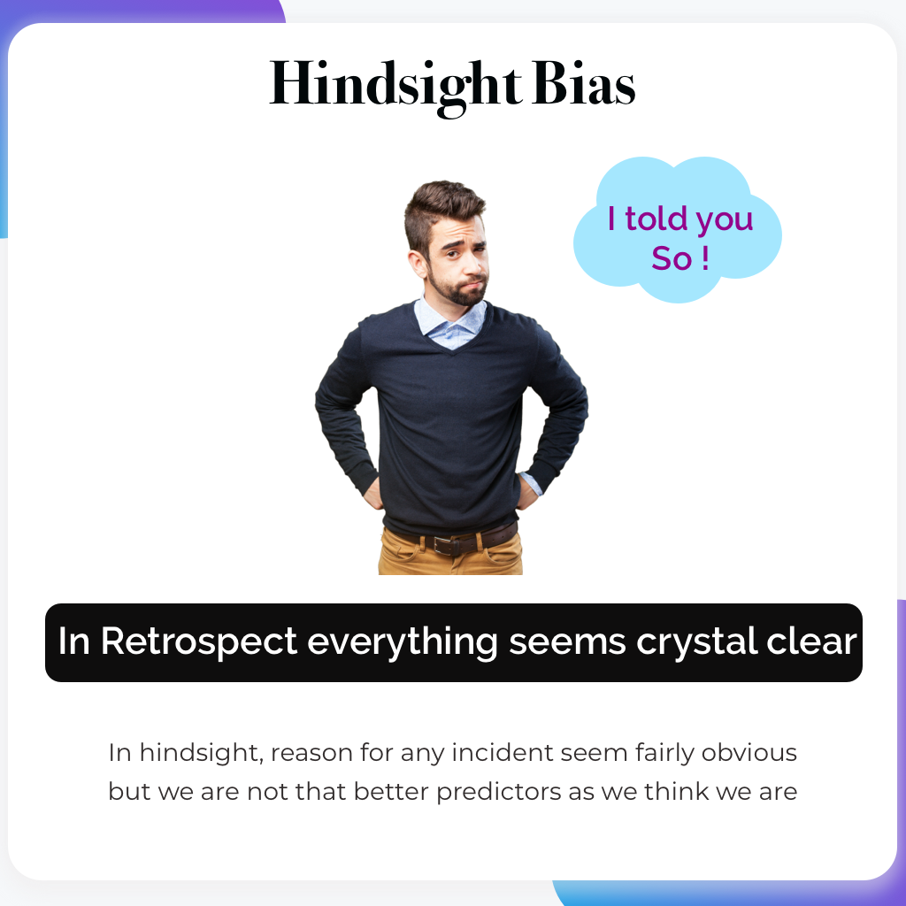
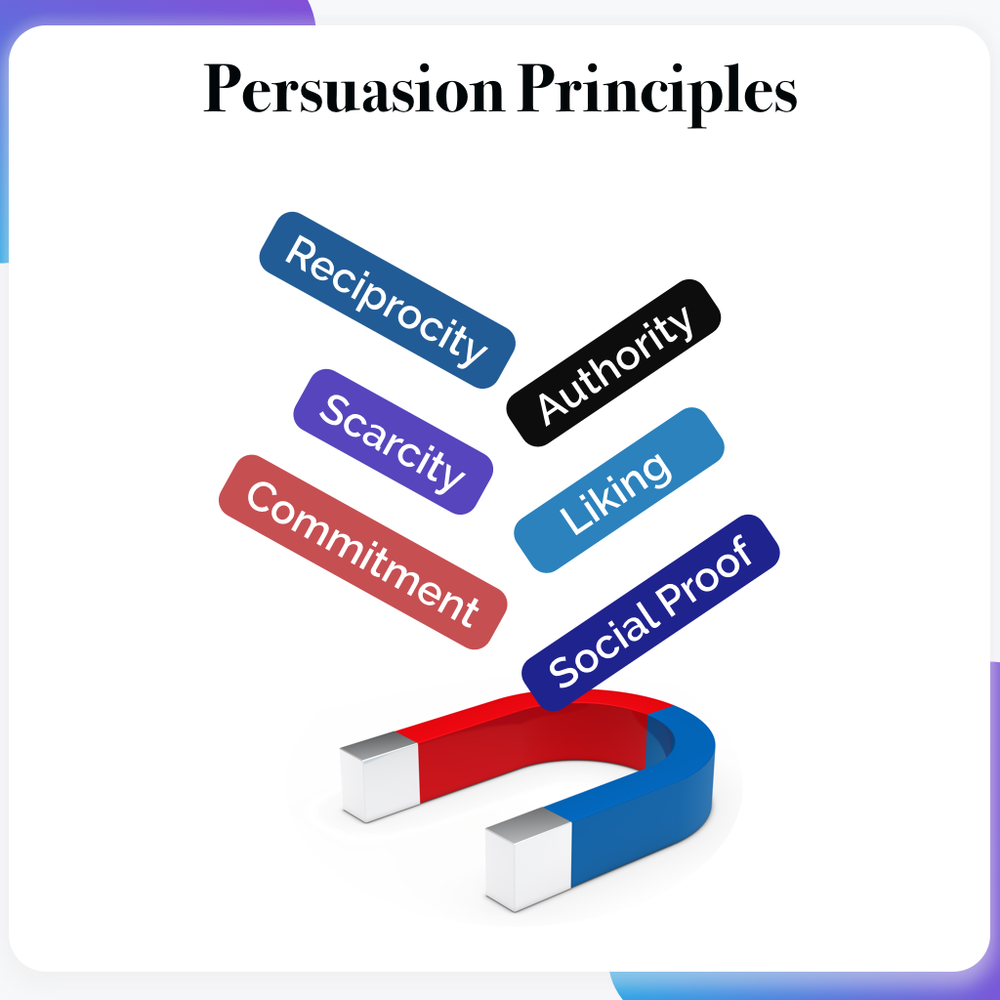
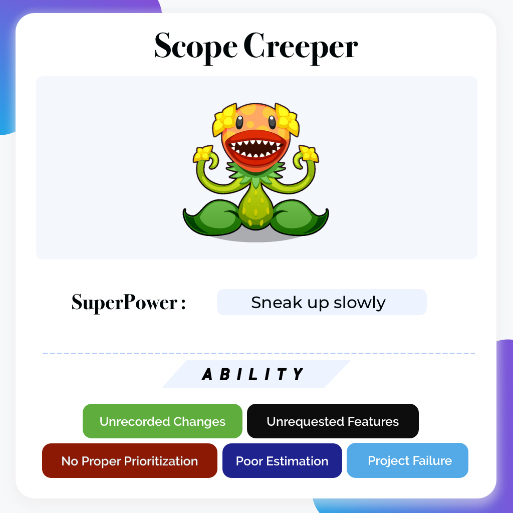
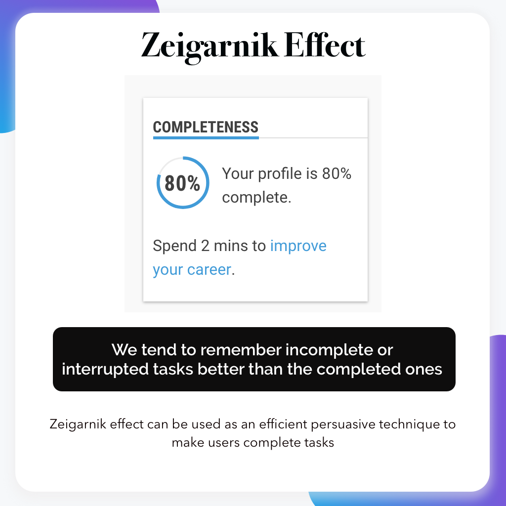

About
Works
UI/UX Designer
UX Enthusiast
Visualizer
To design is to communicate clearly by whatever means you can control or master
- Milton Glaser
UX Bytes





View More on Instagram
Check Me On
Behance
Medium
Top